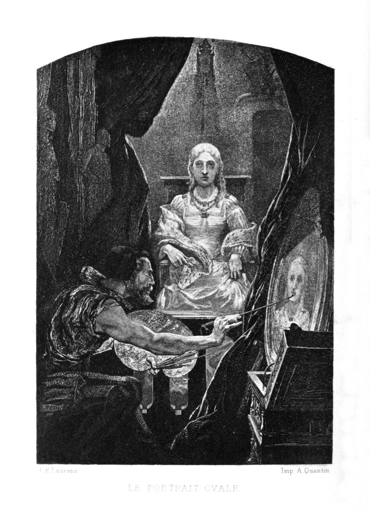

Le Portrait ovale #
Le château dans lequel mon domestique s’était avisé de pénétrer de force, plutôt que de me permettre, déplorablement blessé comme je l’étais, de passer une nuit en plein air, était un de ces bâtiments, mélange de grandeur et de mélancolie, qui ont si longtemps dressé leurs fronts sourcilleux au milieu des Apennins, aussi bien dans la réalité que dans l’imagination de mistress Radcliffe1. Selon toute apparence, il avait été temporairement et tout récemment abandonné. Nous nous installâmes dans une des chambres les plus petites et les moins somptueusement meublées. Elle était située dans une tour écartée du bâtiment. Sa décoration était riche, mais antique et délabrée. Les murs étaient tendus de tapisseries et décorés de nombreux trophées héraldiques de toute forme, ainsi que d’une quantité vraiment prodigieuse de peintures modernes, pleines de style, dans de riches cadres d’or d’un goût arabesque. Je pris un profond intérêt, – ce fut peut-être mon délire qui commençait qui en fut cause, – je pris un profond intérêt à ces peintures qui étaient suspendues non seulement sur les faces principales des murs, mais aussi dans une foule de recoins que la bizarre architecture du château rendait inévitables ; si bien que j’ordonnai à Pedro de fermer les lourds volets de la chambre, – puisqu’il faisait déjà nuit, – d’allumer un grand candélabre à plusieurs branches placé près de son chevet, et d’ouvrir tout grands les rideaux de velours noir garnis de crépines qui entouraient le lit. Je désirais que cela fût ainsi, pour que je pusse au moins, si je ne pouvais pas dormir, me consoler alternativement par la contemplation de ces peintures et par la lecture d’un petit volume que j’avais trouvé sur l’oreiller et qui en contenait l’appréciation et l’analyse.
Je lus longtemps, – longtemps ; – je contemplai religieusement, dévotement ; les heures s’envolèrent, rapides et glorieuses, et le profond minuit arriva. La position du candélabre me déplaisait, et, étendant la main avec difficulté pour ne pas déranger mon valet assoupi, je plaçai l’objet de manière à jeter les rayons en plein sur le livre.
Mais l’action produisit un effet absolument inattendu. Les rayons des nombreuses bougies (car il y en avait beaucoup) tombèrent alors sur une niche de la chambre que l’une des colonnes du lit avait jusque-là couverte d’une ombre profonde. J’aperçus dans une vive lumière une peinture qui m’avait d’abord échappé. C’était le portrait d’une jeune fille déjà mûrissante et presque femme. Je jetai sur la peinture un coup d’œil rapide, et je fermai les yeux. Pourquoi, – je ne le compris pas moi-même tout d’abord. Mais, pendant que mes paupières restaient closes, j’analysai rapidement la raison qui me les faisait fermer ainsi. C’était un mouvement involontaire pour gagner du temps et pour penser, — pour m’assurer que ma vue ne m’avait pas trompé, – pour calmer et préparer mon esprit à une contemplation plus froide et plus sûre. Au bout de quelques instants, je regardai de nouveau la peinture fixement.
Je ne pouvais pas douter, quand même je l’aurais voulu, que je n’y visse alors très nettement ; car le premier éclair du flambeau sur cette toile avait dissipé la stupeur rêveuse dont mes sens étaient possédés, et m’avait appelé tout d’un coup à la vie réelle.
Le portrait, je l’ai déjà dit, était celui d’une jeune fille. C’était une simple tête, avec des épaules, le tout dans ce style qu’on appelle, en langage technique, style de vignette ; beaucoup de la manière de Sully2 dans ses têtes de prédilection. Les bras, le sein, et même les bouts des cheveux rayonnants, se fondaient insaisissablement dans l’ombre vague, mais profonde, qui servait de fond à l’ensemble. Le cadre était ovale, magnifiquement doré et guilloché dans le goût moresque. Comme œuvre d’art, on ne pouvait rien trouver de plus admirable que la peinture elle-même. Mais il se peut bien que ce ne fût ni l’exécution de l’œuvre, ni l’immortelle beauté de la physionomie qui m’impressionna si soudainement et si fortement. Encore moins devais-je croire que mon imagination, sortant d’un demi-sommeil, eût pris la tête pour celle d’une personne vivante. – Je vis tout d’abord que les détails du dessin, le style de vignette et l’aspect du cadre auraient immédiatement dissipé un pareil charme, et m’auraient préservé de toute illusion même momentanée. Tout en faisant ces réflexions, et très vivement, je restai, à demi étendu, à demi assis, une heure entière peut-être, les yeux rivés à ce portrait. À la longue, ayant découvert le vrai secret de son effet, je me laissai retomber sur le lit. J’avais deviné que le charme de la peinture était une expression vitale absolument adéquate à la vie elle-même, qui d’abord m’avait fait tressaillir, et finalement m’avait confondu, subjugué, épouvanté. Avec une terreur profonde et respectueuse, je replaçai le candélabre dans sa position première. Ayant ainsi dérobé à ma vue la cause de ma profonde agitation, je cherchai vivement le volume qui contenait l’analyse des tableaux et leur histoire. Allant droit au numéro qui désignait le portrait ovale, j’y lus le vague et singulier récit qui suit :
« C’était une jeune fille d’une très rare beauté, et qui n’était pas moins aimable que pleine de gaieté. Et maudite fut l’heure où elle vit, et aima, et épousa le peintre. Lui, passionné, studieux, austère, et ayant déjà trouvé une épouse dans son Art ; elle, une jeune fille d’une très rare beauté, et non moins aimable que pleine de gaieté : rien que lumière et sourires, et la folâtrerie d’un jeune faon ; aimant et chérissant toutes choses ; ne haïssant que l’Art qui était son rival ; ne redoutant que la palette et les brosses, et les autres instruments fâcheux qui la privaient de la figure de son adoré. Ce fut une terrible chose pour cette dame que d’entendre le peintre parler du désir de peindre sa jeune épouse. Mais elle était humble et obéissante, et elle s’assit avec douceur pendant de longues semaines dans la sombre et haute chambre de la tour, où la lumière filtrait sur la pâle toile seulement par le plafond. Mais lui, le peintre, mettait sa gloire dans son œuvre, qui avançait d’heure en heure et de jour en jour. – Et c’était un homme passionné, et étrange, et pensif, qui se perdait en rêveries ; si bien qu’il ne voulait pas voir que la lumière qui tombait si lugubrement dans cette tour isolée desséchait la santé et les esprits de sa femme, qui languissait visiblement pour tout le monde, excepté pour lui. Cependant, elle souriait toujours, et toujours sans se plaindre, parce qu’elle voyait que le peintre (qui avait un grand renom) prenait un plaisir vif et brûlant dans sa tâche, et travaillait nuit et jour pour peindre celle qui l’aimait si fort, mais qui devenait de jour en jour plus languissante et plus faible. Et, en vérité, ceux qui contemplaient le portrait parlaient à voix basse de sa ressemblance, comme d’une puissante merveille et comme d’une preuve non moins grande de la puissance du peintre que de son profond amour pour celle qu’il peignait si miraculeusement bien. – Mais, à la longue, comme la besogne approchait de sa fin, personne ne fut plus admis dans la tour ; car le peintre était devenu fou par l’ardeur de son travail, et il détournait rarement ses yeux de la toile, même pour regarder la figure de sa femme. Et il ne voulait pas voir que les couleurs qu’il étalait sur la toile étaient tirées des joues de celle qui était assise près de lui. Et, quand bien des semaines furent passées et qu’il ne restait plus que peu de chose à faire, rien qu’une touche sur la bouche et un glacis sur l’œil, l’esprit de la dame palpita encore comme la flamme dans le bec d’une lampe. Et alors la touche fut donnée, et alors le glacis fut placé ; et pendant un moment le peintre se tint en extase devant le travail qu’il avait travaillé ; mais, une minute après, comme il contemplait encore, il trembla, et il fut frappé d’effroi ; et, criant d’une voix éclatante : « En vérité, c’est la Vie elle-même ! » il se retourna brusquement pour regarder sa bien-aimée : – elle était morte ! »
-
Référence à l’autrice britannique Ann Radcliffe qui était connue pour ses décors de châteaux gothiques dans ses romans. ↩︎
-
Référence au peintre américain Thomas Sully qui était connu pour ses portraits, comme ceux de John Quincy Adams, le marquis de La Fayette, la reine Victoria ou de Thomas Jefferson. ↩︎